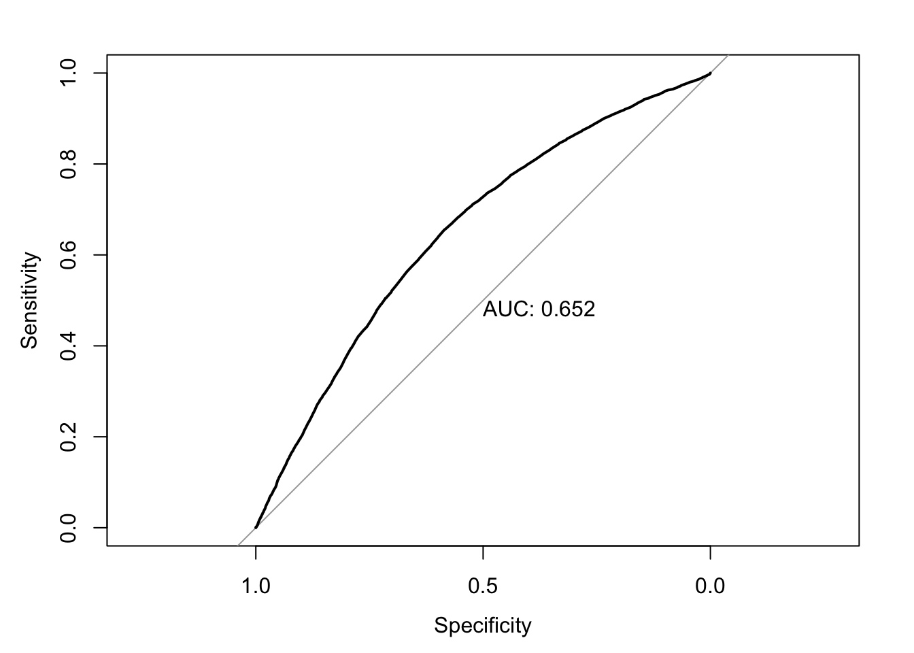

library(dplyr)library(tidyverse)library(tibble)library(ggplot2)library(knitr)library(lmtest)library(caret)library(glmtoolbox)library(predtools)library(pROC)library(car)library(devtools)#using data specified in this github repository:install_github("jhs-hwg/cardioStatsUSA")library(cardioStatsUSA)
#to prevent errors, exclude the rows with na:used_vars =c('cc_diabetes', 'bp_sys_mean', 'demo_age_years', 'demo_race', 'demo_gender', 'cc_bmi', 'cc_smoke', 'bp_med_use')clean_nhanes <- nhanes_data[complete.cases(nhanes_data[,..used_vars]), ]null_model <-glm(cc_diabetes ~1, data = clean_nhanes, family=binomial)simple_diab_model_sys <-glm(cc_diabetes ~ bp_sys_mean, data = clean_nhanes, family = binomial)full_diab_model_sys <-glm(cc_diabetes ~ bp_sys_mean + demo_age_years + demo_race + demo_gender+ cc_bmi + cc_smoke + bp_med_use, data = clean_nhanes, family = binomial)
The next step will be to evaluate the model to determine ______.
5.1 Likelihood Ratio Test
The likelihood ratio test involves comparing whether two models are significantly different. Here, we will compare our full model with the null model (no covariates):
The null hypothesis is that there is no significant difference between the null model \(H_0\) and the full model \(H_1\).
The test compares the predicted likelihood of an observed outcome under the null model vs the predicted likelihood of the outcome under the model. In this case, the outcome will be diabetes. The test statistic will be calculated \(\lambda = -2 log(\frac{L(H_0)}{L(H_1)})\), where L denotes the likelihood of diabetes evaluated under each model. If the likelihood is much higher in the full model than in the null model, it means that additional parameters improve the model fit. As a result, \(\lambda\) and its corresponding p value will be a much smaller, providing stronger evidence that we may need to reject the null hypothesis.
lrtest(full_diab_model_sys, null_model)
#Df
LogLik
Df
Chisq
Pr(>Chisq)
14
-16527.27
NA
NA
NA
1
-20638.95
-13
8223.36
0
As expected, we can see that the full model is significant compared to the null hypothesis. We can also compare it to the simple model which uses only systolic blood pressure as a variable.
Let’s evaluate the accuracy of our model: We first calculate the predicted probabilities using a cutoff probability of 0.5 with our model. Then, we compare these predictions to the references and find our accuracy.
Confusion Matrix and Statistics
Reference
Prediction 0 1
0 44302 6167
1 859 869
Accuracy : 0.8654
95% CI : (0.8624, 0.8683)
No Information Rate : 0.8652
P-Value [Acc > NIR] : 0.4522
Kappa : 0.1533
Mcnemar's Test P-Value : <2e-16
Sensitivity : 0.12351
Specificity : 0.98098
Pos Pred Value : 0.50289
Neg Pred Value : 0.87781
Prevalence : 0.13480
Detection Rate : 0.01665
Detection Prevalence : 0.03311
Balanced Accuracy : 0.55224
'Positive' Class : 1
Our model has a final accuracy of about 86%, and mostly misclassifies those with diabetes as without (false negatives).
5.3 Calibration Plot
The calibration plot compares predicted probabilities to observed probabilities. Essentially, it will compare the data points for which the model predicted probabilities in a certain range and the true observed proportion of these data points which were predicted positives. Ideally, a model will fit close to the line x=y: this would imply that the model’s predictions align with the actual outcome. For example, if our model assigns 100 data points a predicted probability value between 0 and 0.1, and 10 of those points is a positive, then our model fits the data quite well.
clean_nhanes$pred <- pred_probscalibration_plot(data = clean_nhanes, obs ="cc_diabetes_num", pred ="pred")
The Homser-Lemeshow test divides the data into 10 different subgroups of equal size, each with increasing risk for positive prediction, or diabetes in our case. The observed number of those with diabetes in the each group is compared with the expected number based on the model’s prediction.
In our model, we can see that the expected values are somewhat higher than the observed values in the lower proportion groups, however the fit seems to generally be accurate.
5.5 ROC Curve
The Receiver Operating Curve shows the performance of a model by plotting sensitivity vs specificity at different threshold values.
Sensitivity (AKA True Positive Rate) measures the proportion of true positives (samples correctly predicted as diabetes positive) to all the observed positives in the data. This can be written as \[\text{Sensitivity} = \frac{\text{True Positives}}{\text{True Positives + False Negatives}}\]
Specificity (AKA True Negative Rate) measures the proportion of true negatives (samples correctly predicted as diabetes negative) to all the observed negatives in the data. This can be written as \[\text{Specificity} = \frac{\text{True Negativites}}{\text{True Negativites + False Positives}}\]
As a model’s sensitivity increases, specificity will tend to decrease.
At different threshold values (for example, we typically use 0.5 for prediction, but could use any value from 0 to 1), we can calculate both sensitivity and specificity and plot these values on a curve.
The baseline curve used for comparison is just the line y=x. This is essentially modeling random prediction. The closer the curve is to the left and top edge, the better its performance, since it shows a high sensitivity without a huge drop off in specificity.
The AUC, or area under the curve, provides a single number to quantify this curve. The higher the performance of a model, the closer the ROC to the top left and the bigger the area under the curve. The ideal AUC, with both measurements always at 1 due to perfect predictions, would be 1. In practice, AUCs are typically in the range of 80-90.
Setting levels: control = 0, case = 1
Setting direction: controls < cases
plot(roc_mod, print.auc =TRUE)

5.6 Residuals Histogram
A histogram of residuals should resemble a standard normal distribution, ideally. The histogram will plot the frequency of each pearson residual value. In an ideal model, the error between the predictions and observations (residuals) will be a result of random noise, creating a Gaussian shape. Skewness and irregularities may be a sign that the model is not fit properly.
Setting levels: control = 0, case = 1
Setting direction: controls < cases
plot(roc_mod, print.auc =TRUE)
5.6 Residuals Histogram
A histogram of residuals should resemble a standard normal distribution, ideally. The histogram will plot the frequency of each pearson residual value. In an ideal model, the error between the predictions and observations (residuals) will be a result of random noise, creating a Gaussian shape. Skewness and irregularities may be a sign that the model is not fit properly.